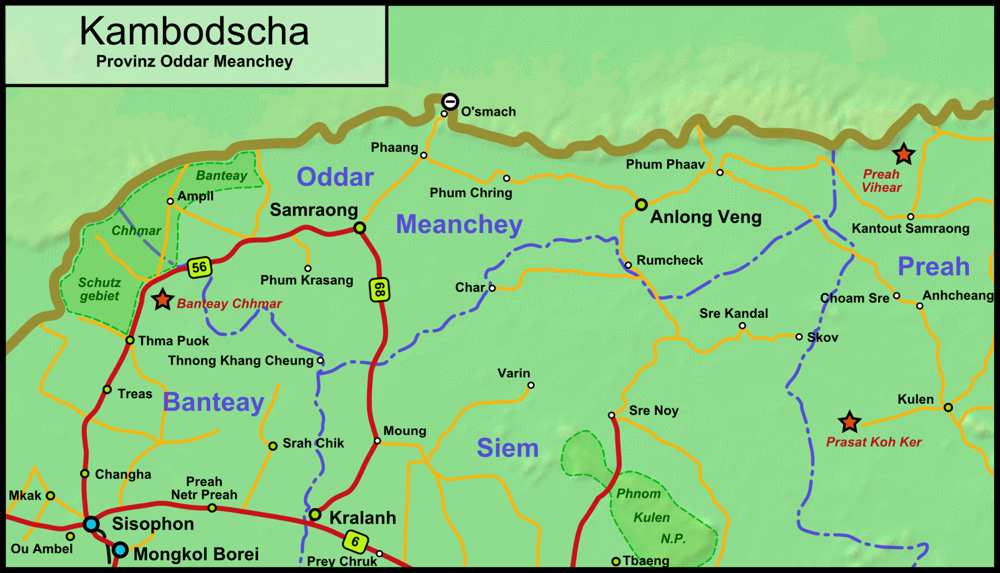

GO HOME
ខេត្តឧត្ដរមានជ័យ
ខេត្តឧត្ដរមានជ័យ គឺជាខេត្តមួយស្ថិតនៅភាគពាយ័ព្យក្នុងប្រទេសកម្ពុជា ដែលមានព្រំប្រទល់ជាប់នឹង
ខេត្តបន្ទាយមានជ័យនៅខាងលិច ខេត្តសៀមរាបនៅខាងត្បូង និងខេត្តព្រះវិហារនៅខាងកើត ហើយ
មានព្រំដែននៅខាងជើងជាប់នឹងព្រំដែននឹងប្រទេសថៃ។ ទីរួមខេត្តគឺសំរោង។ ខេត្តនេះមានចម្ងាយ
ប្រហែលជាង ៤៦២ គីឡូម៉ែត្រពីរាជធានីភ្នំពេញបើចេញដំណើរពីខេត្តឧត្តរមានជ័យមកតាមបណ្តោយ
ផ្លូវជាតិលេខ៦៨ និងភ្ជាប់មកផ្លូវជាតិលេខ៦។ ខេត្តនេះមានទេសចរណ៏ធម្មជាតិ និងទេសចរណ៏វប្បធម៌។
ខេត្តនេះជាតំបន់ដែល មានប្រាសាទបុរាណជាច្រើនផងដែរ។ រីឯតំបន់ទេសចរណ៏ធម្មជាតិវិញ ទីនោះមាន
តំបន់អច្ឆរិយមួយគឺតំបន់រមណីយដ្ឋានដីដុះ ឬ រលួសធំដីដុះ ដែលមានទីតាំងនៅជាប់ជើងភ្នំដងរែក
និងជាប់ផ្លូវក្រវ៉ាត់ព្រំដែន។
 ខេត្តបន្ទាយមានជ័យ
ខេត្តបន្ទាយមានជ័យ
|
 ក្រុងបន្ទាយមានជ័យ
ក្រុងបន្ទាយមានជ័យ
|
រដ្ឋបាលខេត្តបន្ទាយមានជ័យ
ខេត្តបន្ទាយមានជ័យ ស្ថិតនៅ ប្រទេសកម្ពុជា មាន ៧ ស្រុក និង ២ ក្រុង÷
|
លេខកូដស្រុក
|
ឈ្មោះស្រុកជាអក្សរខ្មែរ
|
ឈ្មោះស្រុកជាអក្សរឡាតាំង
|
|
២២០១
|
ស្រុកអន្លង់វែង
|
Anlong Veng
|
|
២២០២
|
ស្រុកបន្ទាយអំពិល
|
Banteay Ampil
|
|
២២០៣
|
ស្រុកចុងកាល់
|
Chong Kal
|
|
២២០៤
|
ក្រុងសំរោង
|
Samraong
|
|
២២០៥
|
ស្រុកត្រពាំងប្រាសាទ
|
Trapeang Prasat
|
ភូមិវិទ្យា
ខេត្តឧត្តរមានជ័យស្ថិតនៅប៉ែកខាងជើងឈៀងខាងលិចនៃប្រទេសកម្ពុជា ដែលមានព្រំប្រទល់ៈ - ខាងជើងជាប់នឹង
ប្រទេសសៀម (ខ្មែរលើ) គឺ៖ ខេត្តបុរីរ៉ាំ,សុរិន្ទ និង ស៊ីសាកេត ដែលមានប្រវែង២២៤គ.ម ខ័ណ្ឌចែកដីយើងនិងថៃ
ដោយភ្នំដងរ៉ែក (គ្មានដីវាលរាបទេជាមួយ ប្រទេសថៃ គឺសុទ្ធតែភ្នំដោយមានតែច្រក៣សម្រាប់ចេញចូលប៉ុណ្ណោះគឺ៖
ច្រកជុបគគី, ច្រកអូស្មាច់, ច្រកជាំសាង៉ាម ។ - ខាងត្បូងជាប់នឹងខេត្តសៀមរាប - ខាងកើតជាប់នឹងខេត្តព្រះវិហារ
ខាងលិចជាប់នឹងខេត្តបន្ទាយមានជ័យ ខេត្តឧត្តរមានជ័យមានចំងាយប្រមាណ ៤៣៩ គីឡូម៉ែត្រពីទីក្រុងភ្នំពេញ
ដោយធ្វើដំណើរតាមផ្លូវជាតិលេខ៦អា និងកាត់តាមខេត្តកណ្តាល កំពង់ចាម និងបន្តដំណើរ តាមផ្លូវជាតិលេខ៦
ពីចំនុចបំបែកស្គន់កាត់តាមខេត្តកំពង់ធំ សៀមរាប ដល់ចំណុច ស្រុកក្រឡាញ់នៃខេត្តសៀមរាប មានផ្លូវបំបែកឆ្ពោះ
ទៅទិសខាងជើងតាមផ្លូវលេខ ៦៨ ទៅកាន់ខេត្តឧត្តរមានជ័យ ។ ខេត្តមានផ្ទៃដីសរុប ៦ ១៥៨ គ.ម២។
ខេត្តឧត្តរមានជ័យមានអាកាសធាតុក្ដៅសើមដូចនៅទូទាំងប្រទេសកម្ពុជាដែរ។ រដូវក្ដៅចាប់ពីខែមិនាដល់ឧសភា
(សីតុណ្ហភាពពី២៧ទៅ៣៥អង្សា) រដូវវស្សាចាប់ពីខែឧសភាដល់តុលា(សីតុណ្ហភាពពី២៤ទៅ៣២អង្សា និងសំនើម៩០%)
និងរដូវរងារចាប់ពីខែវិច្ឆិការដល់ខែមិនា(សីតុណ្ហភាពណី២២ទៅ២៨អង្សា) thumb|right|400px|ផែនទីស្រុក-ក្រុងទាំង
៥នៃខេត្តឧត្តរមានជ័យ
|

ផែនទីភូមិសាស្ត្រខេត្តឧត្តរមានជ័យ
|
ទេសចរណ៍
ខេត្តឧត្តរមានជ័យបានទទួលកេរ្តិ៍ដំណែលវប្បធម៌មួយចំនួន ដែលសព្វថ្ងៃបានក្លាយជាតំបន់ទេសចរណ៍ដ៏គួរអោយ
ចាប់អារម្មណ៍ពីសំណាក់ភ្ញៀវទេសចរជាតិនិងអន្តរជាតិយ៉ាងច្រើន។ ខេត្តឧត្តរមានជ័យរមណីយដ្ឋានវប្បធម៌ជាច្រើន
រួមមានប្រាសាទបុរាណ(នៅមានរូបរាង) ១៨កន្លែង ស្ពានបុរាណ៧កន្លែង ទួលប្រាសាទ៨២កន្លែងនិងស្រះបុរាណ
១៤កន្លែង។ ប្រាសាទសំខាន់នៅខេត្តឧត្តរមានជ័យ មានដូចជា ប្រាសាទតាមន្ត ជាដើម។ ក្រៅពីនេះនៅមាន
រមណីយដ្ឋានធម្មជាតិ៦កន្លែងទៀតសំរាប់ទាក់ទាញទេសចរណ៍។
ប្រវត្តិខេត្ត
ខេត្តឧត្តរមានជ័យបានបង្កើតនៅឆ្នាំ១៩៦៤ តាមព្រះរាជក្រមលេខ ១៩៤ ប.ក ចុះថ្ងៃទី១២ ខែកក្កដា ឆ្នាំ១៩៦៤
នៅសម័យសង្គមរាស្ត្រនិយម (១៩៥៣-១៩៧០) ក្រោមព្រះរាជកិច្ចដឹកនាំដោយសម្ដេចព្រះបាទនរោត្តមសីហនុ
ប៉ុន្តែក្រោយឆ្នាំ១៩៧០ សង្គ្រាមបានឆាបឆេះឡើង រាល់រចនាសម្ព័ន្ធរដ្ឋបាលត្រូវបានលើកទីតាំងដាក់នៅខេត្តសៀមរាប។
ខេត្តឧត្តរមានជ័យត្រូវជាមួយខេត្តសៀមរាបនៅសម័យកម្ពុជាប្រជាធិបតេយ្យ[៤]ឬ សម័យខ្មែរក្រហមជាតំបន់ស្វយ័ត
ដាច់ដោយឡែក(ភូមិភាគពិសេស)។ នៅទសវត្សរ៍ឆ្នាំ៨០-៩០ ខេត្តនេះក៏ជាទីតាំងភូមិសាស្ត្ររបស់ពួកខ្មែរក្រហម
ជាពិសេសគឺស្រុកអន្លង់វែង ។ នៅខេត្តឧត្តរមានជ័យនេះជាទីតាំងដែរប៉ុលពតទទួលមរណៈភាពនៅទីនោះផងដែររហូត
ដល់ពួកខ្មែរក្រហមចុះចូលជាមួយនឹងរាជរដ្ឋាភិបាលនៅឆ្នាំ១៩៩៩។
យោងព្រះរាជក្រឹត្យលេខ/រកត/០១៩៥/០៧ ចុះថ្ងៃទី២៧ ខែមករា ឆ្នាំ១៩៩៥ ខេត្តនេះត្រូវបានបង្កើតឡើងសារជាថ្មី
ផ្ដាច់ចេញពីខេត្តសៀមរាប នៅពេលនោះ រាល់រចនាសម្ព័ន្ធពុំទាន់ដំណើរការនៅឡើយ លុះដល់ថ្ងៃទី២៧ ខែមេសា
ឆ្នាំ១៩៩៩ ស្ថិតក្រោមអធិបតីភាព ឯកឧត្ដម ស ខេង ឧបនាយករដ្ឋមន្ត្រី និងជារដ្ឋមន្ត្រីក្រសួងមហាផ្ទៃ ក៏បាន
ប្រកាសដាក់ឲ្យដំណើរការ ការងាររដ្ឋបាលជាផ្លូវការ។
ប្រជាសាស្ត្រ
ប្រជាជនក្នុងខេត្តឧត្តរមានជ័យសរុបមាន ១៦០ ១៩៦នាក់ក្នុងនោះមានបរុស ៨០ ៤៦៥នាក់ និងស្ត្រីចំនួន ៧៩ ៧៣១នាក់។
ចំនួនខុសគ្នារវាងបុរស និងស្ត្រីដែលមានលក្ខណៈខុសគ្នាធំធេងនោះគឺមាននៅក្នុងស្រុក ចុងកាល់ប៉ុណ្ណោះ ។ ចំណែកស្រុកអន្លង់វែង
បន្ទាយអំពិល សំរោង និងត្រពាំងប្រាសាទ ចំនួនខុសគ្នារវាងស្ត្រី និងបុរសមានចំនួនតិច ។
ខេត្តឧត្តរមានជ័យមានផ្ទៃដីសរុបចំនួន ៦១ ៥៨ គីឡូម៉ែត្រការ៉េ ហើយមានដង់ស៊ីតេប្រជាជន ២៦,១៧នាក់ ក្នុងមួយគីឡូម៉ែត្រការ៉េ
(ស្ថិតិខែមករា ២០០៧) ទាបជាងដង់ស៊ីតេប្រជាជនទូទាំងប្រទេស ដែលស្រុកសំរោងគឺជាស្រុកទីរួមខេត្តរបស់ខេត្តឧត្តរមានជ័យ
ដែលមានសុវត្តិភាពជាងគេបង្អស់ បើប្រៀបធៀបជាមួយនឹងបណ្តាស្រុកដទៃទៀតក្នុងខេត្ត អំឡុងពេលធ្វើសង្គ្រាម ។ ស្រុកសំរោងមាន
ប្រជាជនគិតជាភាគរយប្រមាណ ២៨% ស្រុកអន្លង់វែងប្រមាណ ១៨% ស្រុកបន្ទាយអំពិលប្រមាណ ២៦% ស្រុកចុងកាល់ប្រមាណ១៦%
និងស្រុកត្រពាំងប្រាសាទប្រមាណ ១២% ។
តាមទិន្នន័យឃុំឆ្នាំ ២០០៧បានបញ្ជាក់ថាខេត្តឧត្តរមានជ័យមានចំនួនគ្រួសារសរុប ៣៣ ១៣៣គ្រួសារ ឯគ្រួសារជាមធ្យម ៤.៨៣
នាក់ក្នុងមួយគ្រួសារ និងចំនួនស្ត្រីជាមេគ្រួសារប្រមាណ ៣.៦៧៨ គ្រួសារ បើគិតជាភាគរយនៃចំនួនគ្រួសារសរុបគឺ ១៤.០៧ ភាគរយ ។
អត្រាស្ត្រីជាមេគ្រួសារតាមបណ្តាស្រុកបានបញ្ជាក់ថាស្រុកអន្លង់វែង មាន ចំនួនស្ត្រីជាមេគ្រួសារ ១៧.៥៥ ភាគរយ គឺច្រើនជាងស្រុកនានា
ចំណែកស្រុកដែលមានចំនួនស្ត្រីជាមេគ្រួសារតិចជាងគេ គឺស្រុកត្រពាំងប្រាសាទ ដែលមានភាគរយស្ត្រីមេគ្រួសារប្រមាណ ១១.១១ ភាគរយ ។
សេដ្ឋកិច្ច
សេដ្ឋកិច្ចខេត្តឧត្តរមានជ័យ៩៣%ពឹងផ្អែកលើកសិកម្មហើយ៧%ទៀតពឹងលើការនេសាទនិងជំនួញ។ ដោយសារតែខេត្តនេះមាន
ព្រំប្រទល់ជាប់នឹងប្រទេសថៃ ពាណិជ្ជកម្មអន្តរជាតិមានសកម្មភាពគួរកត់សំគាល់ ដែលបានក្លាយជាវិស័យសំខាន់សំរាប់ទ្រទ្រង់
សេដ្ឋកិច្ចខេត្ត។ ហេដ្ឋារចនាសំព័ន្ធសេដ្ឋកិច្ចខេត្តទទួលរងការបំផ្លិចបំផ្លាញយ៉ាងខ្លាំងក្លានាសម័យខ្មែរក្រហម។ ហេតុនេះការស្ដាររ
ចនាសំព័ន្ធថ្មីមានសារសំខាន់ខ្លាំងណាស់សំរាប់សេដ្ឋកិច្ចខេត្ត។
ខេត្តឧត្តរមានជ័យគ្មានស្ទឹងឬទន្លេហូរកាត់ទេ ប្រជាជនប្រើប្រាស់តាំងពីបូរាណរហូតដល់ពេល បច្ចុប្បន្ន គឺប្រើប្រាស់ទឹកស្រះជាមូលដ្ឋាន
ឯទឹកអណ្ដូងមិនអាចហូបបានទេដោយមានជាតិកំបោរ ។ឯសក្តានុពល សេដ្ឋកិច្ចរបស់ខេត្ត គេសង្កេតឃើញមានដូចជា រ៉ែក្រោមដី
(ធ្យូងថ្ម រ៉ែមាស និល ថ្មកំបោរ ដែក និង សំណជាដើមនៅក្រោមដី)។ ឯនៅលើដីវិញមានព្រៃឈើ ដំណាំស្រូវ ដំណាំកសិឧស្សាហកម្មសត្វ
ព្រៃ ក្រៅពីនេះមានតំបន់ទេសចរណ៍ធម្មជាតិជាច្រើនកន្លែង និង តំបន់ទេសចរណ៍ប្រវត្តិសាស្ត្រ គឺ កន្លែងដែលពួកមេខ្មែរក្រហមជាន់
ខ្ពស់រស់នៅក្នុងអំឡុងពេលខ្លួន ដឹកនាំប្រទេស រយៈពេល៣ឆ្នាំ ៨ខែ និង២០ថ្ងៃ គឺឋិតនៅលើជួរភ្នំដងរ៉ែក ម្ដុំច្រកជាំសាង៉ាមក្នុងស្រុក
អន្លង់វែងខេត្តឧត្តរមានជ័យ។ ក្រៅពីនេះ ខេត្តមានប្រាសាទបុរាណចំនួន១៨ផងដែរ ដើម្បីជូនភ្ញៀវជាតិនិង អន្តរជាតិទស្សនាកំសាន្ត ។